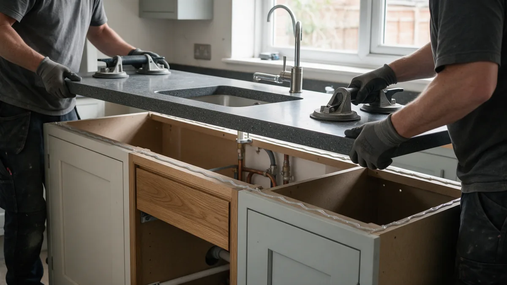
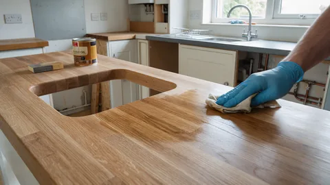

Services · Worktops: laminate, wood and stone
Laminate, solid wood or stone.
The surface you touch every day and the one most people spend the longest choosing. We fit all three, and we are straight about which one suits how you use the kitchen rather than which looks best in a brochure.

Generated photoWhat we hear
Sound familiar?
- We want stone but we have been told the units are not level enough.
- The laminate has blown round the sink where water has got in.
- We like oak but we have heard it is hard work.
- Can we keep the units and just change the worktop?
On the job
What happens
- Check the run is level and the units are solid, because a worktop only ever shows what is underneath it.
- Laminate and wood cut and jointed on site, with the joint set somewhere sensible rather than in front of the window.
- Stone templated once the units are in, then fitted a week or so later by two of us.
- Cut outs for the sink and the appliances made and sealed properly, because that is where water gets in.
- Edges finished, the joint bolted and sealed, and wood given its first coats of oil before anything goes on it.
Sample jobs
Worktops: laminate, wood and stone, from our work
 Generated photoStone worktop fittedHeswall · sample
Generated photoStone worktop fittedHeswall · sample
Generated photoSolid oak, oiledHoylake · sampleMade up sample jobs, with pictures generated for this demo.
Questions
Common questions
Which worktop lasts the longest?
Stone, by a distance, and it is the one you are least likely to damage. Good laminate will take years of normal family use and is the practical choice. Solid wood lasts as long as you look after it, which means oiling it now and then and not leaving water standing by the sink.
Can I keep my units and just change the worktop?
Often yes, as long as the carcasses are square and solid and the run is level. It is one of the quickest changes there is. If you are changing the worktop anyway, that is usually the moment to think about new doors too, because the two together read as a new kitchen.
Why does stone take an extra week?
Because it is templated, not measured off a drawing. Somebody comes and makes a template over your actual units once they are in, then it is cut to that. It is the reason a stone kitchen has a gap in the middle of it, and it is worth it, because a cut out that is 5mm out is a problem you cannot fix on site.
How do I look after an oak worktop?
Oil it when it starts looking dry, wipe water up rather than leaving it, and use a board. Round the sink is where wood lives or dies, so that bit gets the most oil and the most attention. A mark can be sanded out, which you cannot say for most surfaces.
Want somebody to come and measure up?
Tell us what you are after and where you are. We will measure the room and put it in writing.